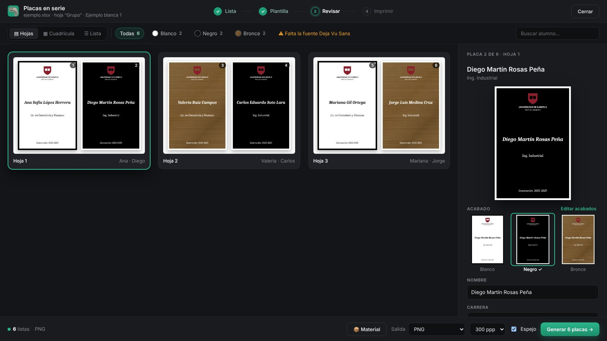

Diseña a tu manera. Produce como nunca.
Todo lo que necesitas para pasar de un diseño a todas las placas de un grupo, listas para la plancha.
Placas en serie
Arrastra tu Excel y salen todas las placas del grupo con su nombre y carrera.
Tres acabados
Blanco, Negro y Bronce con un mismo diseño; cada placa sale como dice tu lista.
Tus diseños de siempre
Abre el PDF que exportas de tu programa de diseño, divide las placas y conviértelas en plantillas.
Sin errores
Avisa de acentos y nombres que no caben, antes de imprimir.
Ve todo antes de imprimir
- Tus placas de 2 en 2, como van a la plancha.
- Cada placa en sus tres acabados.
- Nombres sin acento corregidos con un clic.
- Cuántas láminas y hojas vas a usar.

Mira cómo funciona
Instalar, cargar tus plantillas, hacer un pedido con tu Excel y hacer plantillas desde Corel, paso a paso y con voz.
Descárgala en menos de un minuto
En Mac, la primera vez ve a Ajustes del Sistema › Privacidad y seguridad y pica “Abrir igualmente”.
Que el PDF se guarde solo
Con la macro de Inkara, cada vez que guardas un diseño en Corel se guarda también su PDF. Así lo abres en Inkara desde cualquier computadora, sin tener que exportarlo a mano.
- En Corel presiona Alt+F11 e importa InkaraPDF.bas en GlobalMacros.
- Pega el texto de ThisMacroStorage.txt donde dicen las instrucciones y guarda.
- Cierra y vuelve a abrir Corel. Listo: cada guardado deja su PDF.
Trae instrucciones paso a paso. También convierte a PDF carpetas completas de diseños viejos. Se hace una sola vez, unos 10 minutos.